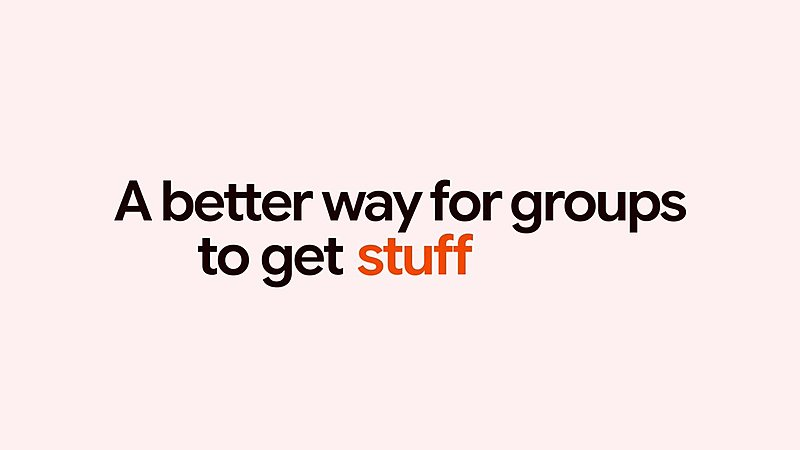
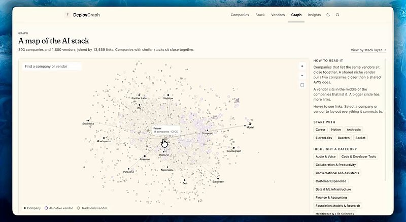

AI 日报 · 11月13日
AI 的下一步：更快判断与共同协作
Google 发布 Gemini Decisions API 和 Tabletop；Builder 讨论决策、团队判断与创作，另看 GitHub Trending。
决策模型
协作产品
Builder 动态
开源工具
6
Builder 动态
3
上榜仓库
2
官方发布
今日要点
RSS 精选
中文社区关注决策模型
已检查 feeds.json 中四个 RSS 源；只收录与今日主题直接相关的新条目。
Builder 动态
判断、协作与创作实践
Google Labs｜Tabletop 将资料变为协作空间
Google Labs 介绍可将链接、文件和想法放进共享空间，再生成地图、投票与赛程等交互内容；目前面向美国 18 岁以上用户开放候补名单。

Nikunj Kothari｜用子处理方名单观察模型采用
他称抓取 803 家公司的子处理方清单；其中列出两家以上模型供应商的比例从 33% 升至 44%。样本较小，且名单有滞后性。

Dan Shipper｜团队的价值在判断与责任
Shipper 以同一份客户调查为例，说明团队成员会从各自负责的领域找到不同机会；这是其工作经验与观点。
Aditya Agarwal｜区分 AI 扩散与前沿探索
他将创业方向分为把 AI 带入现有工作场景，以及用 AI 加速科学进展并从中创造产品。
Guillermo Rauch｜好产品仍需要人的专注
Rauch 提醒，打造优秀产品依然需要持续的人类专注、投入与判断。
GitHub Trending
编码代理与安全工具上榜
11 月 13 日 GitHub Trending 页面快照；仓库数字由 GitHub API 核验。
今日思考
生成式模型可以提出方案，但自动化执行仍需要明确选项、置信门槛与责任人。
参考来源
Google Gemini Decisions API 官方发布
Google Tabletop 官方发布
AI前线 RSS 原文
GitHub Trending
Google Labs｜Tabletop 将资料变为协作空间
Nikunj Kothari｜用子处理方名单观察模型采用
Dan Shipper｜团队的价值在判断与责任
Aditya Agarwal｜区分 AI 扩散与前沿探索
Claude｜艺术家用 Claude 编写动画代码
Guillermo Rauch｜好产品仍需要人的专注
GoogleChrome/modern-web-guidance-src
openai/codex-security
QwenLM/qwen-code